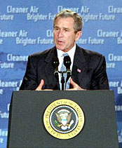

|
 Center for the Defense of Free Enterprise
Congratulations, President Bush, |
|
HOME ISSUES OPPOSITION PROJECTS DEFENDERS WISE USE BOOKSTORE ARCHIVE |
President George W. Bush has signed an Executive Order, "Facilitation of Cooperative Conservation," that instructs federal agencies to include private landowners and businesses when making decisions that affect land use and environmental regulations.
Center Executive Director Ron Arnold congratulated the President for bringing all citizens into the federal decision-making process. "We have looked forward to this order for a long time," said Arnold in a news release. "It finally recognizes that ordinary citizens have a role in federal environmental rule-making, not just the big organized power-and-pressure groups that prefer command-and-control tactics from the top. For too long, the left-leaning environmental movement has rolled back the safety net of constitutional protection of property owners from federal intrusion and abuse. President Bush's inclusion of all of us is just what America needs to stop irresponsible and senseless rules that do nothing to help the environment but do everything to increase the power of zealous bureaucrats. This is a great day for all the people of the United States."
The order instructs five federal agencies - the Departments of Interior, Agriculture, Commerce, Defense and the Environmental Protection Agency (EPA) - to include local groups in decision-making that affects land use and environmental regulations.
The Sierra Club has condemned President Bush's inclusion of local people in the decision-making process because it dilutes environmentalist power to dictate policy through Club members and allies in the bureaucracy. The Sierra Club and other environmental groups call for defeating Bush's re-election bid in an effort to gain powerful jobs in a Democratic Party administration.
The full text of President Bush's order:
Executive Order
Facilitation of Cooperative Conservation
By the authority vested in me as President by the Constitution and the laws of the United States of America, it is hereby ordered as follows:
Section 1. Purpose. The purpose of this order is to ensure that the Departments of the Interior, Agriculture, Commerce, and Defense and the Environmental Protection Agency implement laws relating to the environment and natural resources in a manner that promotes cooperative conservation, with an emphasis on appropriate inclusion of local participation in Federal decisionmaking, in accordance with their respective agency missions, policies, and regulations.
Sec. 2. Definition. As used in this order, the term "cooperative conservation" means actions that relate to use, enhancement, and enjoyment of natural resources, protection of the environment, or both, and that involve collaborative activity among Federal, State, local, and tribal governments, private for-profit and nonprofit institutions, other nongovernmental entities and individuals.
Sec. 3. Federal Activities. To carry out the purpose of this order, the Secretaries of the Interior, Agriculture, Commerce, and Defense and the Administrator of the Environmental Protection Agency shall, to the extent permitted by law and subject to the availability of appropriations and in coordination with each other as appropriate:
(a) carry out the programs, projects, and activities of the agency that they respectively head that implement laws relating to the environment and natural resources in a manner that:
(i) facilitates cooperative conservation;
(ii) takes appropriate account of and respects the interests of persons with ownership or other legally recognized interests in land and other natural resources;
(iii) properly accommodates local participation in Federal decisionmaking; and
(iv) provides that the programs, projects, and activities are consistent with protecting public health and safety;
(b) report annually to the Chairman of the Council on Environmental Quality on actions taken to implement this order; and
(c) provide funding to the Office of Environmental Quality Management Fund (42 U.S.C. 4375) for the Conference for which section 4 of this order provides.
Sec. 4. White House Conference on Cooperative Conservation. The Chairman of the Council on Environmental Quality shall, to the extent permitted by law and subject to the availability of appropriations:
(a) convene not later than 1 year after the date of this order, and thereafter at such times as the Chairman deems appropriate, a White House Conference on Cooperative Conservation (Conference) to facilitate the exchange of information and advice relating to (i) cooperative conservation and (ii) means for achievement of the purpose of this order; and
(b) ensure that the Conference obtains information in a manner that seeks from Conference participants their individual advice and does not involve collective judgment or consensus advice or deliberation.
Sec. 5. General Provision. This order is not intended to, and does not, create any right or benefit, substantive or procedural, enforceable at law or in equity by any party against the United States, its departments, agencies, instrumentalities or entities, its officers, employees or agents, or any other person.
GEORGE W. BUSH
THE WHITE HOUSE,
August 26, 2004.
# # #
RETURN TO PUBLIC POLICY TOP PAGE
RETURN TO CENTER FOR THE DEFENSE OF FREE ENTERPRISE HOME PAGE